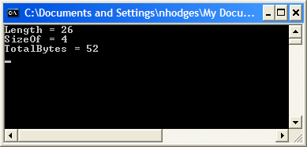

Delphi in a Unicode World Part III: Unicodifying Your Code
As discussed in Part I
of this series, we saw Delphi 2009 will use by default a UTF-16 based
string. As a result, certain code idioms within existing code may need
to be changed. In general, the large majority of existing code will
work just fine with Delphi 2009. As you’ll see, most of the code
changes that need to be made are quite specific and somewhat esoteric.
However, some specific code idioms will need to be reviewed and perhaps
have changes made to ensure that the code works properly with UnicodeString.
For example, any code that manipulates or does pointer operations on
strings should be examined for Unicode compatibility. More
specifically, any code that:
- Assumes that SizeOf(Char) is 1
- Assumes that the Length of a string is equal to the number of bytes in the string
- Writes or reads strings from some persistent storage or uses a string as a data buffer
should be reviewed to ensure that those assumptions are not
persisted in code. Code that writes to or reads from persistent storage
needs to ensure that the correct number of bytes are being read or
written, as a single byte no longer represents a single character.
Generally, any needed code changes should be straightforward and can be done with a minimal amount of effort.
Areas That Should “Just Work”
This section discusses area of code that should continue to work,
and should not require any changes to work properly with the new UnicodeString.
All of the VCL and RTL have been updated to work as expected in Delphi
2009, and with very, very few exceptions, such will be the case. For
instance, TStringList is now completely Unicode-aware, and all existing TStringList code should work as before. However, TStringList
has been enhanced to work specifically with Unicode, so if you want to
take advantage of that new functionality, you can, but you need not if
you don’t want to.
General Use of String Types
In general, code that uses the string type should work as before.
There is no need to re-declare string variables as AnsiString types,
except as discussed below. String declarations should only be changed
to be AnsiString when dealing with storage buffers or other types of
code that uses the string as a data buffer.
The Runtime Library
The runtime library additions are discussed extensively in Part II.
That article doesn’t mention a new unit added to the RTL C AnsiString.pas. This unit exists for backwards compatibility with code that chooses to use or requires the use of AnsiString within it.
Runtime library code runs as expected and in general requires no change. The areas that do need change are described below.
The VCL
The entire VCL is Unicode aware. All existing VCL components work
right out of the box just as they always have. The vast majority of
your code using the VCL should continue to work as normal. We’ve done a
lot of work to ensure that the VCL is both Unicode ready and backwards
compatible. Normal VCL code that doesn’t do any specific string
manipulation will work as before.
String Indexing
String Indexing works exactly as before, and code that indexes into strings doesn’t need to be changed:
var
S: string;
C: Char;
begin
S := ‘This is a string’;
C := S[1];
end;
Length/Copy/Delete/SizeOf with Strings
Copy will still work as before without change. So will Delete and all the SysUtils-based string manipulation routines.
Calls to Length(SomeString) will, as always, return the number of elements in the passed string.
Calls to SizeOf on any string identifier will return 4, as all string declarations are references and the size of a pointer is 4.
Calls to Length on any string will return the number of elements in the string.
Consider the following code:
var
S: string;
begin
S:= 'abcdefghijklmnopqrstuvwxyz';
WriteLn('Length = ', Length(S));
WriteLn('SizeOf = ', SizeOf(S));
WriteLn('TotalBytes = ', Length(S) * SizeOf(S[1]));
ReadLn;
end.
The output of the above is as follows:

Pointer Arithmetic on PChar
Pointer arithmetic on PChar should continue to work as before. The
compiler knows the size of PChar, so code like the following will
continue to work as expected:
var
p: PChar;
MyString: string;
begin
...
p := @MyString[1];
Inc(p);
...
end;
This code will work exactly the same as with previous versions of Delphi C but of course the types are different: PChar is now a PWideChar and MyString is now a UnicodeString.
ShortString
ShortString remains unchanged in both functionality and declaration, and will work just as before.
ShortString declarations allocate a buffer for a specific number of AnsiChars. Consider the following code:
var
S: string[26];
begin
S:= 'abcdefghijklmnopqrstuvwxyz';
WriteLn('Length = ', Length(S));
WriteLn('SizeOf = ', SizeOf(S));
WriteLn('TotalBytes = ', Length(S) * SizeOf(S[1]));
ReadLn;
end.
It has the following output:
Note that the total bytes of the alphabet is 26 C showing that the variable is holding AnsiChars.
In addition, consider the following code:
type
TMyRecord = record
String1: string[20];
String2: string[15];
end;
This record will be laid out in memory exactly as before C it will be a record of two AnsiStrings with AnsiChars in them. If you’ve got a File of Rec
of a record with short strings, then the above code will work as
before, and any code reading and writing such a record will work as
before with no changes.
However, remember that Char is now a WideChar, so if you have some code that grabs those records out of a file and then calls something like:
var
MyRec: TMyRecord;
SomeChar: Char;
begin
SomeChar := MyRec.String1[3];
...
end;
then you need to remember that SomeChar will convert the AnsiChar in String1[3] to a WideChar. If you want this code to work as before, change the declaration of SomeChar:
var
MyRec: TMyRecord;
SomeChar: AnsiChar;
begin
SomeChar := MyRec.String1[3];
...
end;
Areas That Should be Reviewed
This next section describes the various semantic code constructs
that should be reviewed in existing code for Unicode compatibility.
Because Char now equals WideChar,
assumptions about the size in bytes of a character array or string may
be invalid. The following lists a number of specific code constructs
that should be examined to ensure that they are compatible with the new
UnicodeString type.
SaveToFile/LoadFromFile
SaveToFile and LoadFromFile
calls could very well go under the “Just Works” section above, as these
calls will read and write just as they did before. However, you may
want to consider using the new overloaded versions of these calls if
you are going to be dealing with Unicode data when using them.
For instance, TStrings now includes the following set of overloaded methods:
procedure SaveToFile(const FileName: string); overload; virtual;
procedure SaveToFile(const FileName: string; Encoding: TEncoding); overload; virtual;
The second method above is the new overload that includes an
encoding parameter that determines how the data will be written out to
the file. (You can read Part II for an explanation of the TEncoding
type.) If you call the first method above, the string data will be
saved as it always has been C as ANSI data. Therefore, your existing
code will work exactly as it always has.
However, if you put some Unicode string data into the text to be
written out, you will need to use the second overload, passing a
specific TEncoding type. If you do not, the strings will be written out as ANSI data, and data loss will likely result.
Therefore, the best idea here would be to review your SaveToFile and LoadFromFile
calls, and add a second parameter to them to indicate how you’d like
your data saved. If you don’t think you’ll ever be adding or using
Unicode strings, though, you can leave things as they are.
Use of the Chr Function
Existing code that needs to create a Char from an integer value may make use of the Chr function. Certain uses of the Chr function may result in the following error:
[DCC Error] PasParser.pas(169): E2010 Incompatible types: 'AnsiChar' and 'Char'
If code using the Chr function is assigning the result to an AnsiChar, then this error can easily be removed by replacing the Chr function with a cast to AnsiChar.
So, this code
MyChar := chr(i);
Can be changed to
MyChar := AnsiChar(i);
Sets of Characters
Probably the most common code idiom that will draw the attention of
the compiler is the use of characters in sets. In the past, a character
was one byte, so holding characters in a set was no problem. But now, Char is declared as a WideChar, and thus cannot be held in a set any longer. So, if you have some code that looks like this:
procedure TDemoForm.Button1Click(Sender: TObject);
var
C: Char;
begin
C := Edit1.Text[1];
if C in ['a'..'z', 'A'..'Z'] then
begin
Label1.Caption := 'It is there';
end;
end;
and you compile it, you’ll get a warning that looks something like this:
[DCC Warning] Unit1.pas(40): W1050 WideChar reduced to byte char in set expressions. Consider using 'CharInSet' function in 'SysUtils' unit.
You can, if you like, leave the code that way C the compiler will
“know” what you are trying to do and generate the correct code.
However, if you want to get rid of the warning, you can use the new CharInSet function:
if CharInSet(C, ['a'..'z', 'A'..'Z']) then
begin
Label1.Caption := 'It is there';
end;
The CharInSet function will return a Boolean value, and compile without the compiler warning.
Using Strings as Data Buffers
A common idiom is to use a string
as a data buffer. It’s common because it’s been easy --manipulating
strings is generally pretty straight forward. However, existing code
that does this will almost certainly need to be adjusted given the fact
that string now is a UnicodeString.
There are a couple of ways to deal with code that uses a string as a data buffer. The first is to simply declare the variable being used as a data buffer as an AnsiString instead of string. If the code uses Char to manipulate bytes in the buffer, declare those variables as AnsiChar.
If you choose this route, all your code will work as before, but you do
need to be careful that you’ve explicitly declared all variables
accessing the string buffer to be ANSI types.
The second and preferred way dealing with this situation is to convert your buffer from a string type to an array of bytes, or TBytes. TBytes is designed specifically for this purpose, and works as you likely were using the string type previously.
Calls to SizeOf on Buffers
Calls to SizeOf when used with character arrays should be reviewed for correctness. Consider the following code:
procedure TDemoForm.Button1Click(Sender: TObject);
var
var
P: array[0..16] of Char;
begin
StrPCopy(P, 'This is a string');
Memo1.Lines.Add('Length of P is ' + IntToStr(Length(P)));
Memo1.Lines.Add('Size of P is ' + IntToStr(SizeOf(P)));
end;
This code will display the following in Memo1:
Length of P is 17
Size of P is 34
In the above code, Length will return the number of characters in the given string (plus the null termination character), but SizeOf
will return the total number of Bytes used by the array, in this case
34, i.e. two bytes per character. In previous versions, this code would
have returned 17 for both.
Use of FillChar
Calls to FillChar need to be reviewed when used in conjunction with strings or a character. Consider the following code:
var
Count: Integer;
Buffer: array[0..255] of Char;
begin
Count := Length(Buffer);
FillChar(Buffer, Count, 0);
Count := SizeOf(Buffer);
Count := Length(Buffer) * SizeOf(Char);
FillChar(Buffer, Count, 0);
end;
Length returns the size in characters but FillChar expects Count to be in bytes. In this case, SizeOf should be used instead of Length (or Length needs to be multiplied by the size of Char).
In addition, because the default size of a Char is 2, FillChar will fill a string with bytes, not Char as previously
Example:
var
Buf: array[0..32] of Char;
begin
FillChar(Buf, Length(Buf), #9);
end;
This doesn’t fill the array with code point $09 but code point
$0909. In order to get the expected result the code needs to be changed
to:
var
Buf: array[0..32] of Char;
begin
..
StrPCopy(Buf, StringOfChar(#9, Length(Buf)));
..
end;
Using Character Literals
The following code
if Edit1.Text[1] = #128 then
will recognize the Euro symbol and thus evaluate to True in most ANSI codepages. However, it will evaluate to False
in Delphi 2009 because while #128 is the euro sign in most ANSI code
pages, it is a control character in Unicode. In Unicode, Euro symbol is
#$20AC.
Developers should replace any characters #128-#255 with literals, when converting to Delphi 2009, since:
if Edit1.Text[1] = '€' then
will work the same as #128 in ANSI, but also work (i.e., recognize the Euro) in Delphi 2009 (where '€' is #$20AC)
Calls to Move
Calls to Move need to be reviewed when strings or character arrays are used. Consider the following code:
var
Count: Integer;
Buf1, Buf2: array[0..255] of Char;
begin
Count := Length(Buf1);
Move(Buf1, Buf2, Count);
Count := SizeOf(Buf1);
Count := Length(Buf1) * SizeOf(Char);
Move(Buf1, Buf2, Count);
end;
Length returns the size in characters but Move expects Count to be in bytes. In this case, SizeOf should be used instead of Length (or Length needs to be multiplied by the size of Char).
Read/ReadBuffer methods of TStream
Calls to TStream.Read/ReadBuffer need to be reviewed when strings or character arrays are used. Consider the following code:
var
S: string;
L: Integer;
Stream: TStream;
Temp: AnsiString;
begin
Stream.Read(L, SizeOf(Integer));
SetLength(S, L);
Stream.Read(Pointer(S)^, L);
Stream.Read(L, SizeOf(Integer));
SetLength(S, L);
Stream.Read(Pointer(S)^, L * SizeOf(Char));
Stream.Read(L, SizeOf(Integer));
SetLength(Temp, L);
Stream.Read(Pointer(Temp)^, L * SizeOf(AnsiChar));
S := Temp;
end;
Note: The solution depends on the format of the data being read. See the new TEncoding class described above to assist in properly encoding the text in the stream.
Write/WriteBuffer
As with Read/ReadBuffer, calls to TStream.Write/WriteBuffer need to be reviewed when strings or character arrays are used. Consider the following code:
var
S: string;
Stream: TStream;
Temp: AnsiString;
begin
Stream.Write(Pointer(S)^, Length(S));
Stream.Write(Pointer(S)^, Length(S) * SizeOf(Char));
Temp := S;
Stream.Write(Pointer(Temp)^, Length(Temp) * SizeOf(AnsiChar));
end;
Note: The solution depends on the format of the data being written. See the new TEncoding class described above to assist in properly encoding the text in the stream.
LeadBytes
Replace calls like this:
if Str[I] in LeadBytes then
with the IsLeadChar function:
if IsLeadChar(Str[I]) then
TMemoryStream
In cases where a TMemoryStream
is being used to write out a text file, it will be useful to write out
a Byte Order Mark (BOM) as the first entry in the file. Here is an
example of writing the BOM to the file:
var
BOM: TBytes;
begin
...
BOM := TEncoding.UTF8.GetPreamble;
Write(BOM[0], Length(BOM));
All writing code will need to be changed to UTF8 encode the Unicode string:
var
Temp: Utf8String;
begin
...
Temp := Utf8Encode(Str);
Write(Pointer(Temp)^, Length(Temp));
TStringStream
TStringStream now descends from a new type, TByteStream. TByteStream adds a property named Bytes which allows for direct access to the bytes with a TStringStream. TStringStream works as it always has, with the exception that the string it holds is a Unicode-based string.
MultiByteToWideChar
Calls to MultiByteToWideChar can simply be removed and replaced with a simple assignment. An example when using MultiByteToWideChar:
procedure TWideCharStrList.AddString(const S: string);
var
Size, D: Integer;
begin
Size := SizeOf(S);
D := (Size + 1) * SizeOf(WideChar);
FList[FUsed] := AllocMem(D);
MultiByteToWideChar(0, 0, PChar(S), Size, FList[FUsed], D);
Inc(FUsed);
end;
And after the change to Unicode, this call was changed to support compiling under both ANSI and Unicode:
procedure TWideCharStrList.AddString(const S: string);
var
L, D: Integer;
begin
FList[FUsed] := StrNew(PWideChar(S));
Inc(FUsed);
end;
SysUtils.AppendStr
This method is deprecated, and as such, is hard-coded to use AnsiString and no UnicodeString overload is available.
Replace calls like this:
AppendStr(String1, String2);
with code like this:
String1 := String1 + String2;
Or, better yet, use the new TStringBuilder class to concatenate strings.
GetProcAddress
Calls to GetProcAddress should always use PAnsiChar (there is no W-suffixed function in the SDK). For example:
procedure CallLibraryProc(const LibraryName, ProcName: string);
var
Handle: THandle;
RegisterProc: function: HResult stdcall;
begin
Handle := LoadOleControlLibrary(LibraryName, True);
@RegisterProc := GetProcAddress(Handle, PAnsiChar(AnsiString(ProcName)));
end;
Note: Windows.pas will provide an overloaded method that will do this conversion.
Use of PChar() casts to enable pointer arithmetic on non-char based pointer types
In previous versions, not all typed pointers supported pointer arithmetic. Because of this, the practice of casting various non-char pointers to PChar
is used to enable pointer arithmetic. For Delphi 2009, pointer
arithmetic can be enabled using a compiler directive, and it is
specifically enabled for the PByte type. Therefore, if you have code like the following that casts pointer data to PChar for the purpose of performing pointer arithmetic on it:
function TCustomVirtualStringTree.InternalData(Node: PVirtualNode): Pointer;
begin
if (Node = FRoot) or (Node = nil) then
Result := nil
else
Result := PChar(Node) + FInternalDataOffset;
end;
You should change this to use PByte rather than PChar:
function TCustomVirtualStringTree.InternalData(Node: PVirtualNode): Pointer;
begin
if (Node = FRoot) or (Node = nil) then
Result := nil
else
Result := PByte(Node) + FInternalDataOffset;
end;
In the above snippet, Node is not actually character data. It is being cast to a PChar
merely for the purpose of using pointer arithmetic to access data that
is a certain number of bytes after Node. This worked previously because
SizeOf(Char) = Sizeof(Byte). This is no longer true, and to ensure the code remains correct, it needs to be change to use PByte rather than PChar. Without the change, Result will end up pointing to the incorrect data.
Variant open array parameters
If you have code that uses TVarRec to handle variant open array parameters, you may need to adjust it to handle UnicodeString. A new type vtUnicodeString is defined for use with UnicodeStrings. The UnicodeString data is held in vUnicodeString. See the following snippet from DesignIntf.pas, showing a case where new code needed to be added to handle the UnicodeString type.
procedure RegisterPropertiesInCategory(const CategoryName: string;
const Filters: array of const); overload;
var
I: Integer;
begin
if Assigned(RegisterPropertyInCategoryProc) then
for I := Low(Filters) to High(Filters) do
with Filters[I] do
case vType of
vtPointer:
RegisterPropertyInCategoryProc(CategoryName, nil,
PTypeInfo(vPointer), );
vtClass:
RegisterPropertyInCategoryProc(CategoryName, vClass, nil, );
vtAnsiString:
RegisterPropertyInCategoryProc(CategoryName, nil, nil,
string(vAnsiString));
vtUnicodeString:
RegisterPropertyInCategoryProc(CategoryName, nil, nil,
string(vUnicodeString));
else
raise Exception.CreateResFmt(@sInvalidFilter, [I, vType]);
end;
end;
CreateProcessW
The Unicode version of CreateProcess (CreateProcessW) behaves slightly differently than the ANSI version. To quote MSDN in reference to the lpCommandLine parameter:
"The Unicode version of this function, CreateProcessW,
can modify the contents of this string. Therefore, this parameter
cannot be a pointer to read-only memory (such as a const variable or a
literal string). If this parameter is a constant string, the function
may cause an access violation."
Because of this, some existing code that calls CreateProcess may start giving Access Violations when compiled in Delphi 2009.
Examples of problematic code:
Passing in a string constant
CreateProcess(nil, 'foo.exe', nil, nil, False, 0, nil, nil, StartupInfo, ProcessInfo);
Passing in a constant expression
const
cMyExe = 'foo.exe'
begin
CreateProcess(nil, cMyExe, nil, nil, False, 0, nil, nil, StartupInfo, ProcessInfo);
end;
Passing in a string with a Reference Count of -1:
const
cMyExe = 'foo.exe'
var
sMyExe: string;
begin
sMyExe := cMyExe;
CreateProcess(nil, PChar(sMyExe), nil, nil, False, 0, nil, nil, StartupInfo, ProcessInfo);
end;
Code to search for
The following is a list of code patterns that you might want to search for to ensure that your code is properly Unicode-enabled.
- Search for any uses of of Char or of AnsiChar” to ensure that the buffers are used correctly for Unicode
- Search for instances “string[“ to ensure that the characters reference are placed into Chars (i.e. WideChar).
- Check for the explicit use of AnsiString, AnsiChar, and PAnsiChar to see if it is still necessary and correct.
- Search for explicit use of ShortString to see if it is still necessary and correct
- Search for Length( to ensure that it isn’t assuming that Length is the same as SizeOf
- Search for Copy(, Seek(, Pointer(, AllocMem(, and GetMem( to ensure that they are correctly operating on strings or array of Chars.
They represent code constructs that could potentially need to be changed to support the new UnicodeString type.
Conclusion
So that sums up the types of code idioms you need to review for
correctness in the Unicode world. In general, most of your code should
work. Most of the warnings your code will receive can be easily fixed
up. Most of the code patterns you’ll need to review are generally
uncommon, so it is likely that much if not all of your existing code
will work just fine.